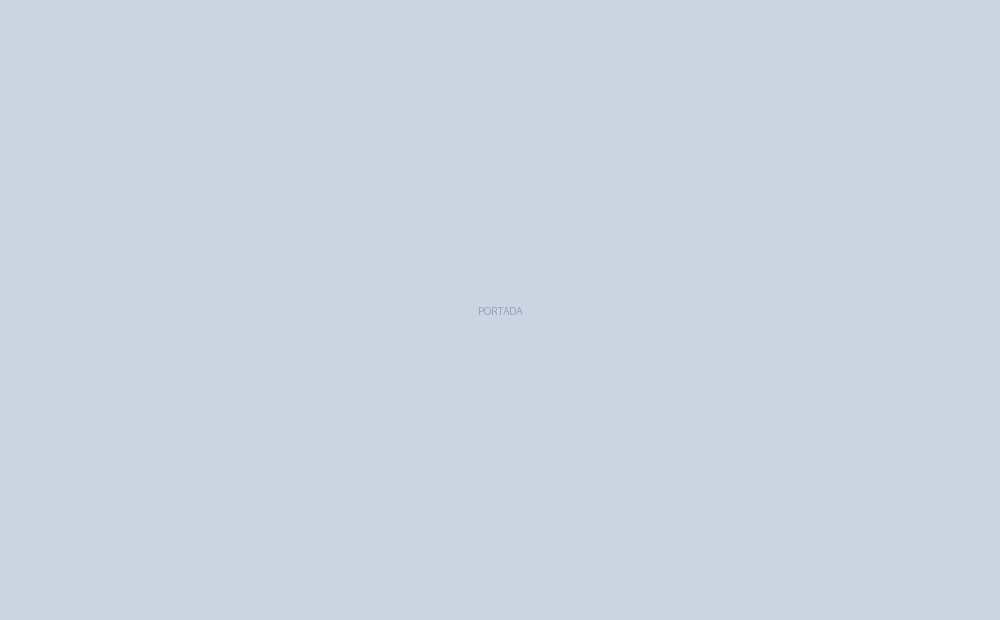

Bienvenidos al Catálogo Formativo
Este sitio web representa el "molde" que desarrollaremos en el aula para dominar HTML5 y CSS adaptable tradicional sin la metodología Mobile-First. En las siguientes páginas, analizaremos cómo estructurar datos tabulares, diseñar grillas de tarjetas flexibles, mostrar fichas técnicas individuales e implementar formularios transaccionales.
